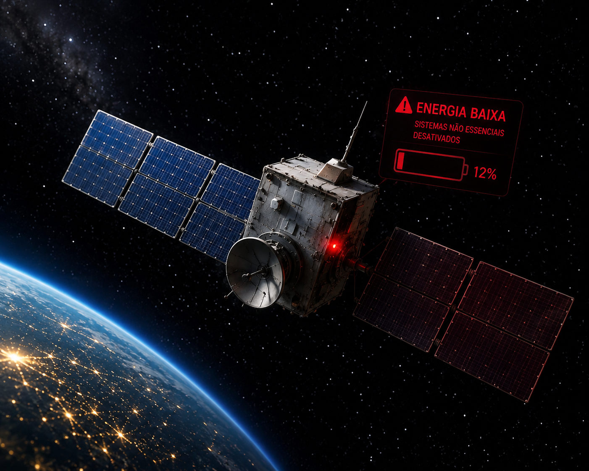
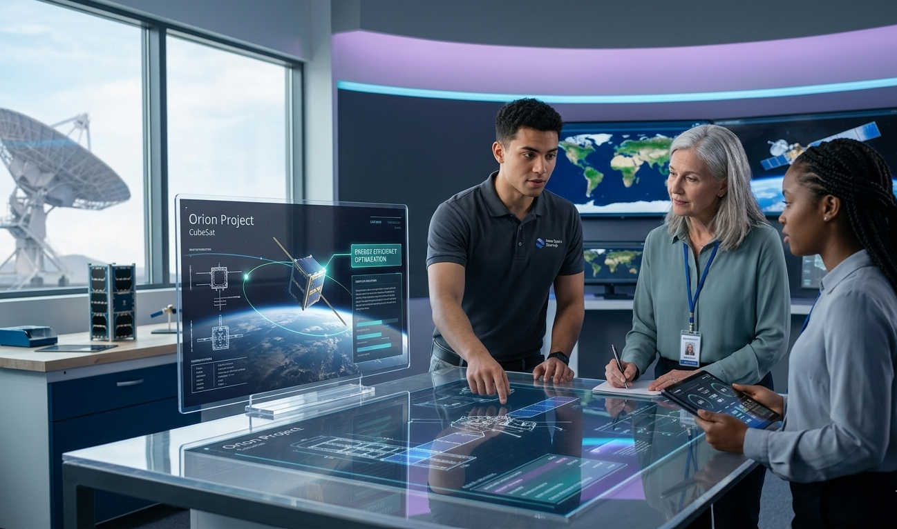
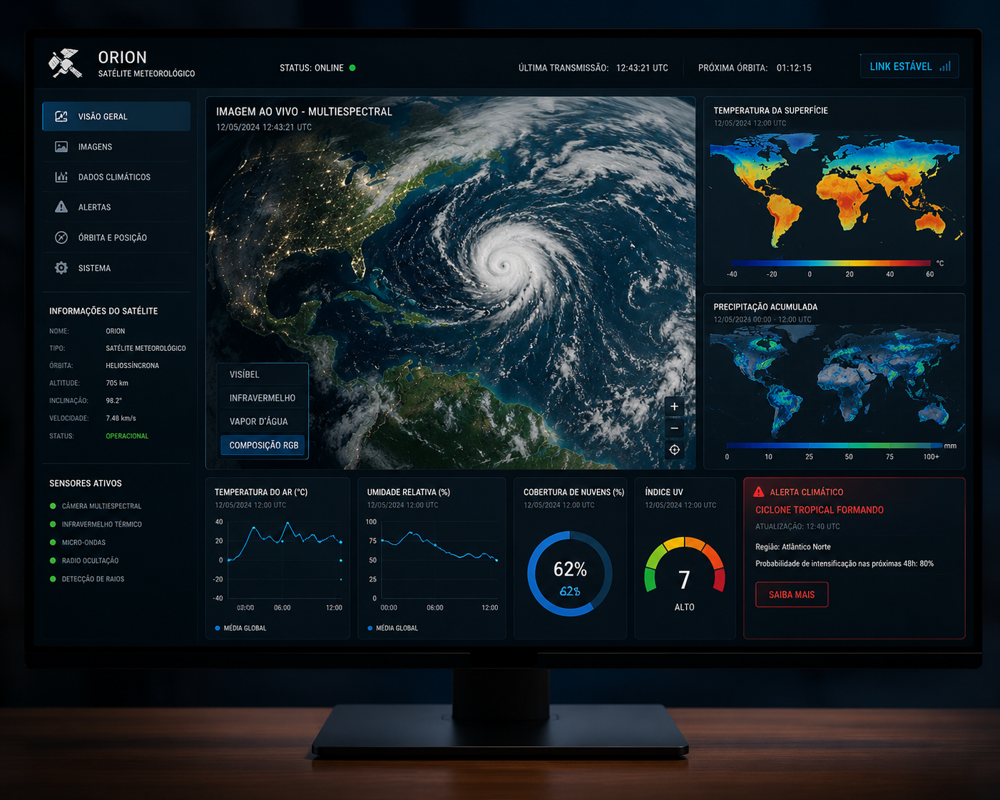

Computação de borda e máxima eficiência energética para a sobrevivência de CubeSats em órbita.
Descobrir SoluçãoOs pequenos satélites CubeSats enfrentam severas restrições de armazenamento de energia e recursos elétricos muito limitados no espaço sideral.
Componentes visuais redundantes instalados no hardware, como LEDs externos, geram desperdício elétrico acumulado que é crítico para a missão.

Nossa arquitetura utiliza computação de borda embarcada com sensores de alta precisão integrados e o protocolo de comunicação I2C.
Algoritmos computacionais robustos programados na linguagem C++ eliminam completamente o consumo de energia elétrica espúria que é desnecessária.
Otimizar a captação e geração de energia fotovoltaica do microssatélite através do uso de atuadores dinâmicos totalmente autônomos.
Garantir proteção térmica ativa controlando o posicionamento das placas solares durante a sombra periódica projetada pela nossa Terra.
A tecnologia atende startups do setor privado New Space e também importantes centros de pesquisas aeroespaciais de nível universitário.
Instituições globais que necessitam urgentemente de arquiteturas de satélites que sejam baratas, eficientes e energeticamente muito mais resilientes.

A solução proporciona um aumento estimado de trinta por cento no tempo de vida útil operacional do dispositivo eletrônico.
Garante alinhamento técnico direto com o ODS nove estabelecido pela ONU sobre o desenvolvimento de infraestrutura industrial sustentável.
Assegura o funcionamento contínuo e estável de satélites modernos que são dedicados à monitorização meteorológica e climática global diária.
Fornece dados ambientais em tempo real para apoiar o agronegócio moderno e também os complexos sistemas de navegação terrestre.
